VietJusticIA / Mobile redesign
Legal clarity.
Confident
next steps.
A mobile redesign for people navigating Vietnamese law.
Explore the app screens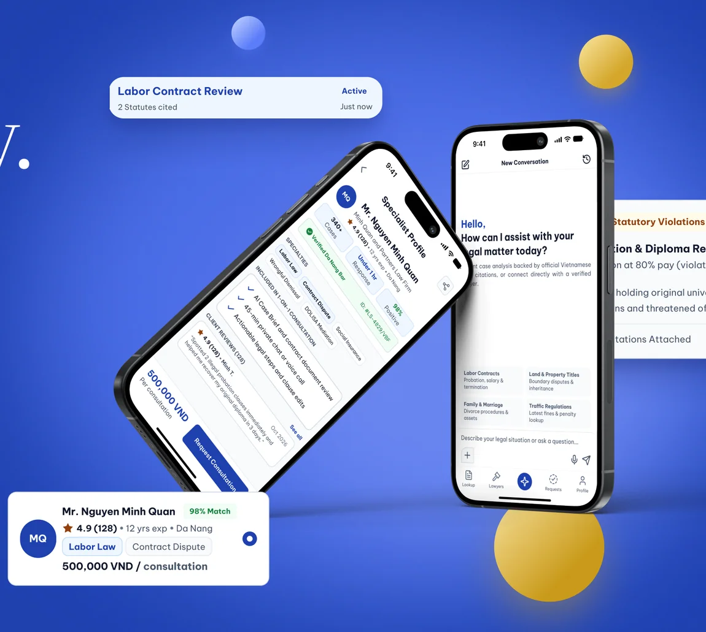
The brief
Where do you start with a legal question?
I built the original VietJusticIA for my computing degree. For this solo redesign, I followed one question across the app. What happens when a graduate is asked to hand over their original diploma for a first job?
A reader might find what they need in the Labor Code. If they want a lawyer’s opinion, they should be able to take the question, the cited article and the conversation with them.
- Designed for
- Citizens and small-business owners in Vietnam
- My role
- Solo product designer
- Scope
- Interface audit, information architecture, wireframes, visual identity and mobile UI
Interface audit
The menu hid the next step.
In the original app, basic tasks took four to five taps. I traced the paths to a document and a lawyer, then looked at what happened when a reader hit an error.


Information architecture
Five destinations in view.
I brought Lookup, Lawyers, AI Assistant, Requests and Profile into the bottom navigation. The design target was to put core actions within two taps.
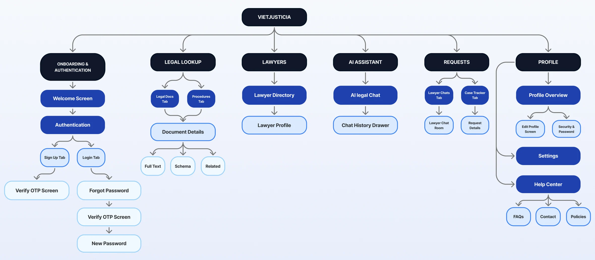
User flow
A first job offer raises a question.
- Ask and check. The graduate asks about the contract, opens the cited Labor Code article and can save the answer in chat history.
- Review the brief. If they need a second opinion, they can review the AI summary and compare three suggested specialists.
- Continue with a lawyer. Once a lawyer accepts, the brief stays pinned above the conversation.
Someone who already knows they need a lawyer can go straight to the directory.
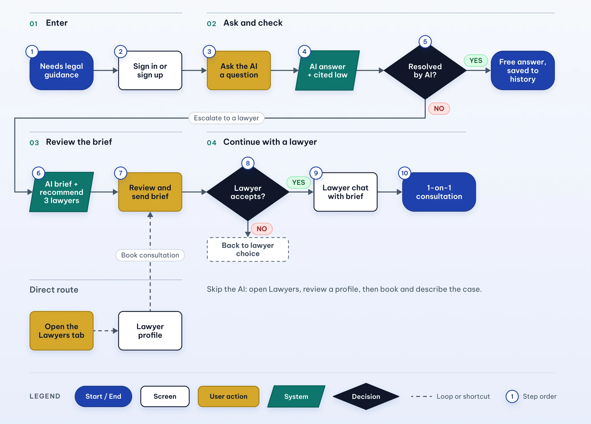
Wireframes
Designing the reading order.
I worked out what a reader needs to see before choosing a next step. In the library, it’s the document title and status. In a contract answer, it’s the cited article. In the directory, it’s a lawyer’s specialty and fee.
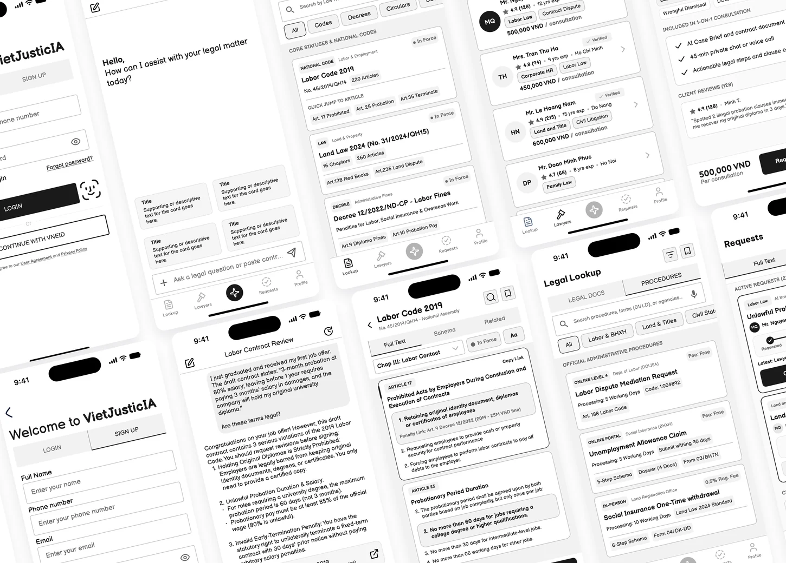
Identity & UI system
Official law. Human lawyers. Digital access.
Three columns form a V and a J inside the shield. A gold keystone sits above them. Across the app, Be Vietnam Pro, shared tabs and 44 px fields give dense legal information a consistent reading order.

Final mobile UI
Inside VietJusticIA.
Follow the graduate from a first sign-in to a consultation. Select a screen for a closer look.
Access & account
A shared account layout carries the reader through registration, verification and password recovery.
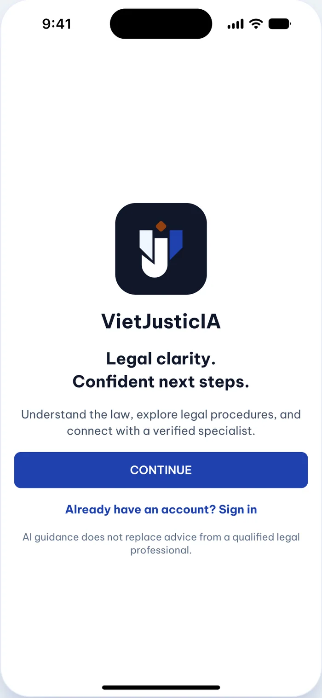
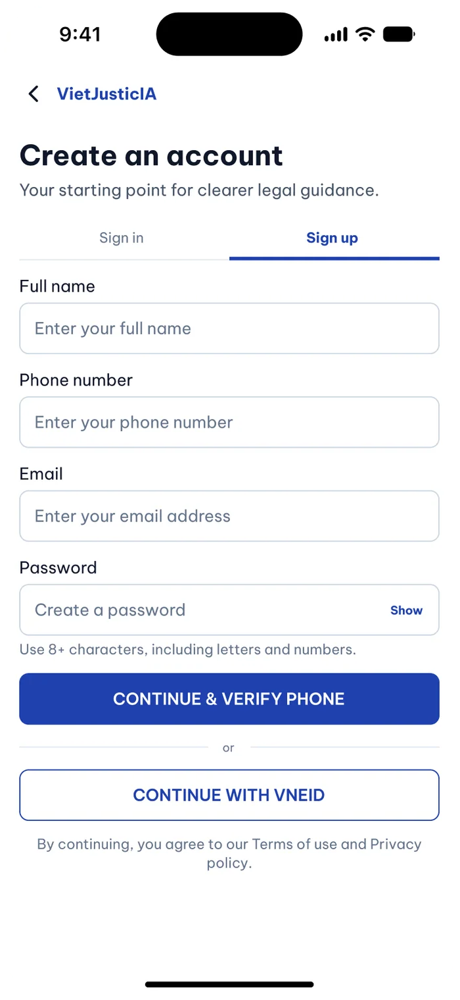
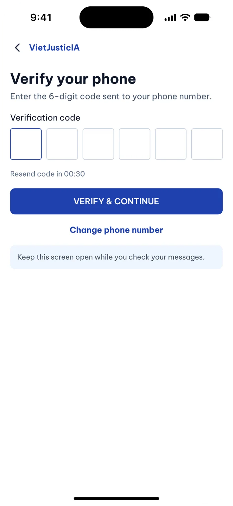
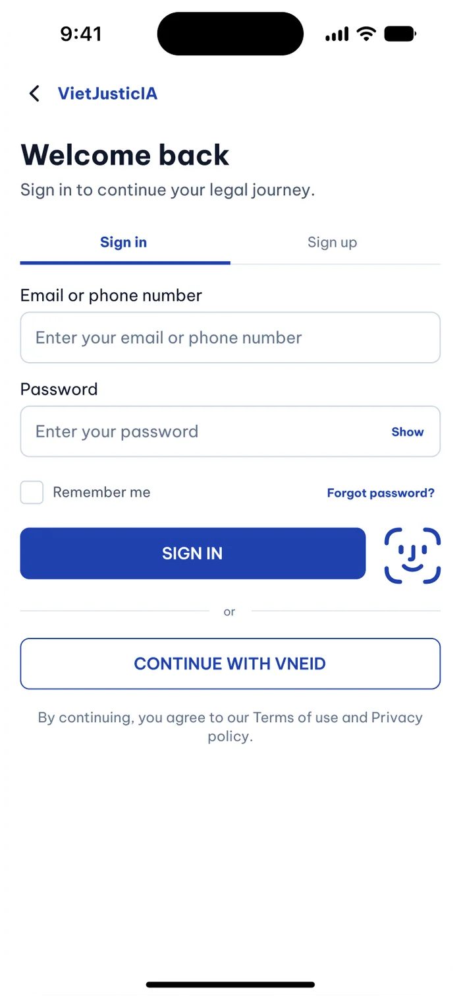
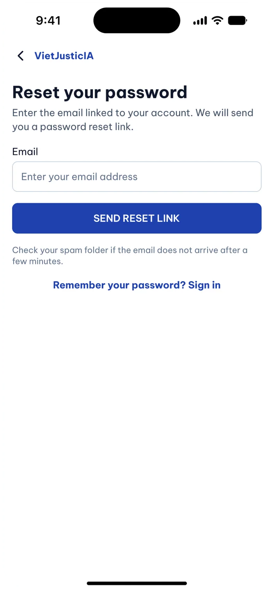
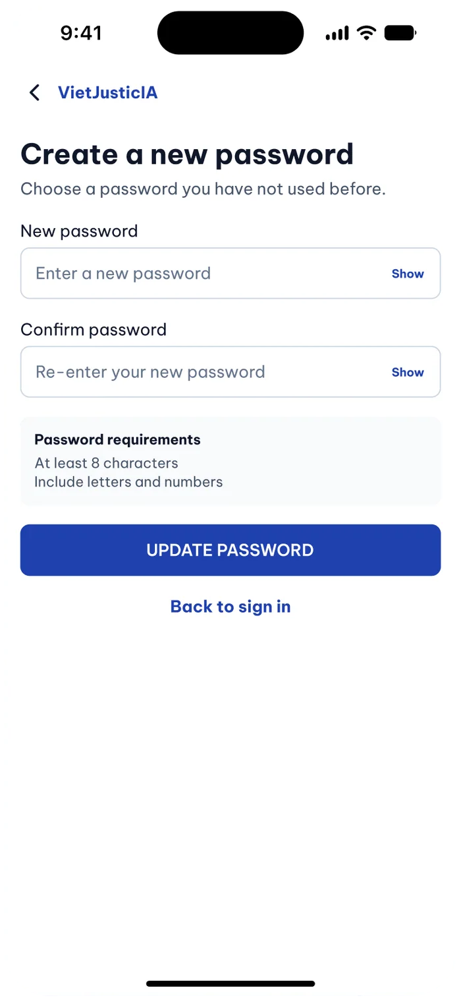
AI assistance
A suggested question starts the conversation. The answer links back to the law, and a handover sheet gathers the brief, citations and lawyer matches.


Legal lookup
Statutes and administrative procedures share an entry point. Each has its own filters and detail view, so readers can move from a rule to the steps for acting on it.

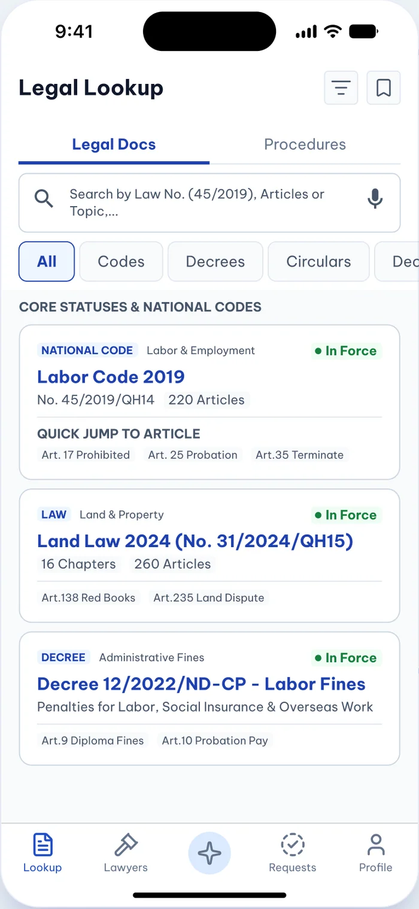

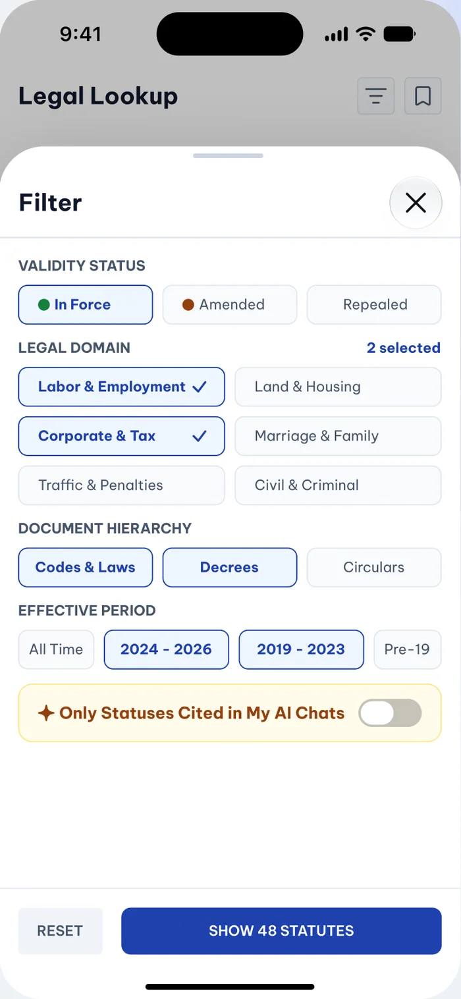

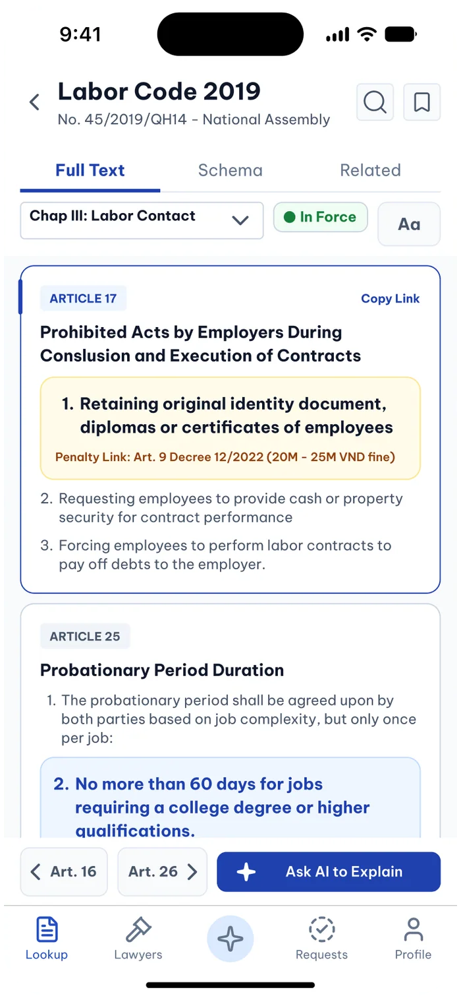

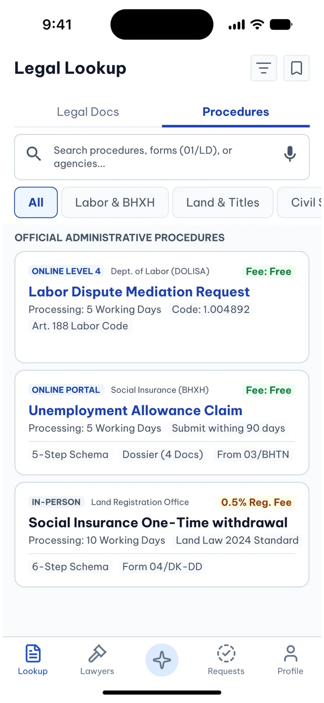

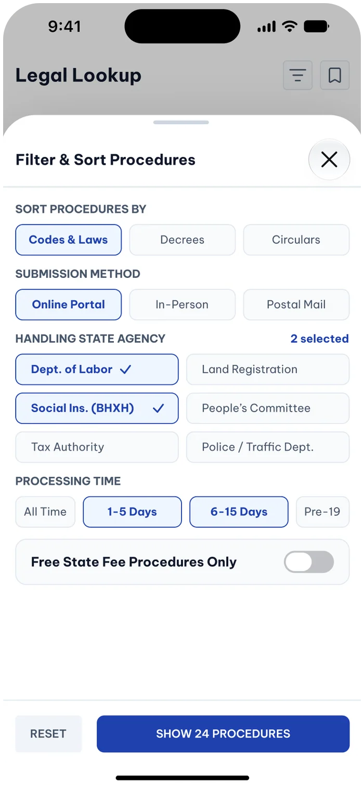

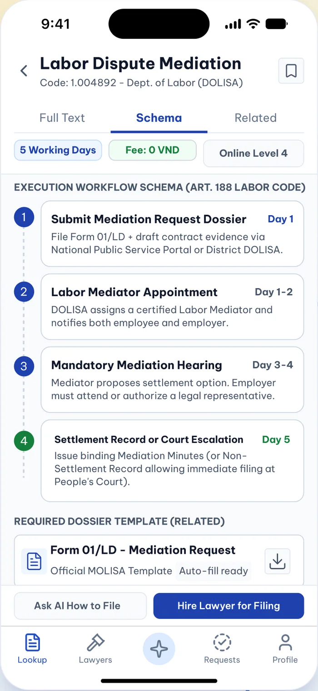
Specialists & cases
Readers can compare practice areas, verification, reviews and fees before sending a request. After acceptance, the brief stays with the lawyer chat.

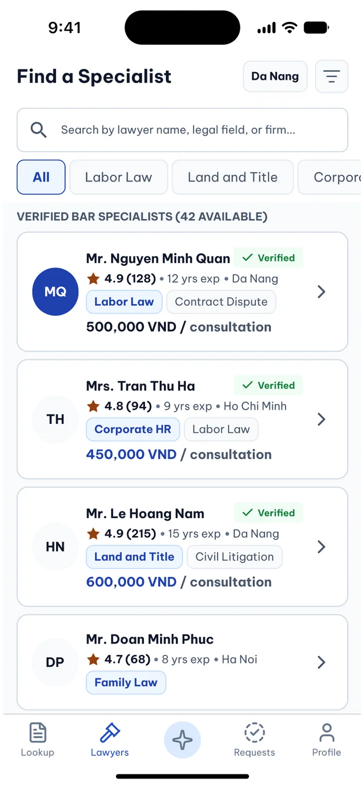

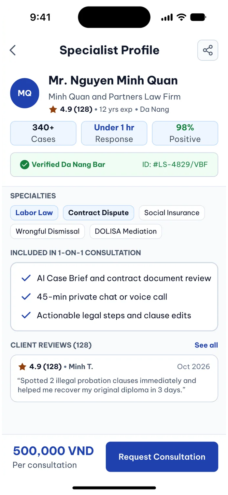

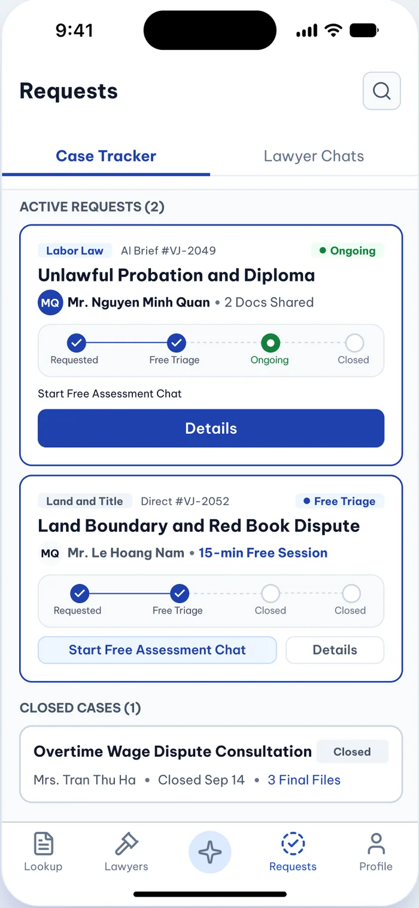

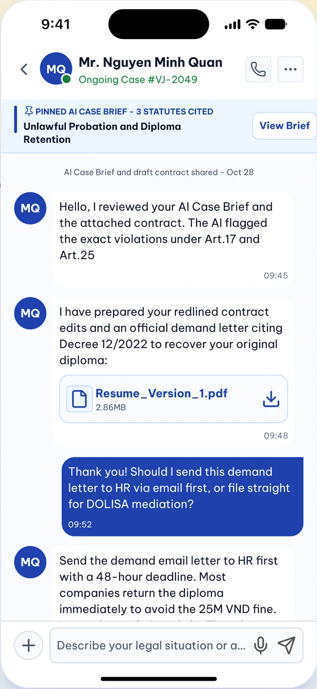
Design outcome
One case from question to consultation.
The graduate can leave with the cited law or send a reviewed brief to a lawyer. When the consultation begins, the lawyer already has the question and the sources behind it.
View the original Behance presentation